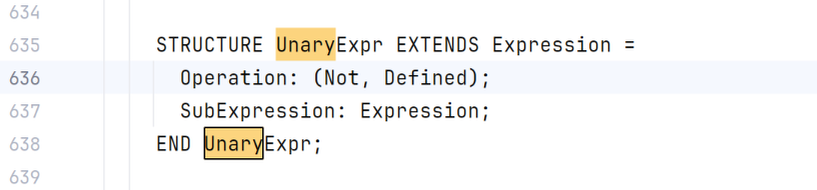
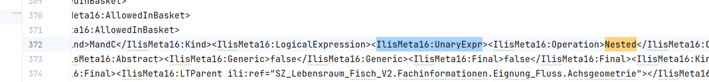
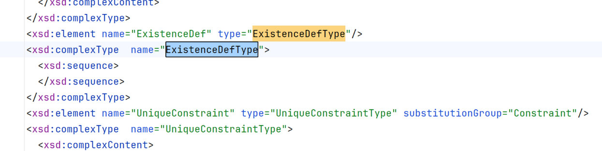

Open Questions
Used ili2c version: 5.6.6
During the intense work with IMD16 which were produced by ili2c, some questions came up. These are summarized here. These Questions are not exclusively related to the compiler but may also be related to the Reference Manual of INTERLIS 2.4
Missing Topic ilisMeta16.ModelTranslation in IMD16
Issue created: https://github.com/claeis/ili2c/issues/149 => it should be solved with next release
Missing INTERLIS.UTC.Hours in IMD16
It seems that several pieces of the INTERLIS model are missing. On behalf of that INTERLIS.UTC.Hours
is cited as an example.
Difference of mandatory and multiplicity
It came to attention, that types carry both information multiplicity and mandatory. Even if these
serves different purposes and they are correctly set, it seems a bit awkward having both. ili2py
trades this information transparently forward. However, it might be a good idea to overcome this in the
next iteration of INTERLIS.
OIDs are not transported comprehensible
In cases where a topic of one model (B) extends a topic of another model (A) and in Domain of model A there is an OID defined, the OID is set only in the Topics of model A when they extend each other. But when a model B contains a Topic extending a Topic of A (which defines an OID), then no OID is present on classes of topic in model B.
Example is: OeREBKRM_V2_0 and OeREBKRMtrsfr_V2_0 where OeREBKRMtrsfr_V2_0 defines topic Transferstruktur
extending OeREBKRM_V2_0.Amt. OeREBKRM_V2_0.Amt defines OID AS OEREBOID; but all classes from
OeREBKRMtrsfr_V2_0.Transferstruktur have oid=Null in the resulting IMD16.
Version of ModelData.Model not in IMD16 (2.4)
When creating IMD16 with ili2c from 2.4 Models (e.g. Waldreservate_V2_0), the element ModelData.Model
ModelData.Model.Version is missing.
IlisMeta16.Operation 'Nested' in IlisMeta16.UnaryExpr
Ili model IlisMeta16 defines: 
{kind=link}
But imd16 generated with ili2c 5.6.6 delivers an operation 'Nested': 
{kind=link}
Example models: - SZ_Lebensraum_Fisch_V2 - Hazard_Mapping_LV95_V1_3 - DMAV_HoheitsgrenzenAV_V1_0 - DMAV_Grundstuecke_V1_0 - DMAV_Dienstbarkeitsgrenzen_V1_0 - DMAV_Gebaeudeadressen_V1_0 - KbS_V1_5 - ...
Potentially missing IlisMeta16.ExistenceDefType in imd16 exports
ili2c 5.6.6 seems to miss the ExistenceDefType association in imd16 exports. It seems to be missing in the XSD too: 
{kind=link}
Example model: - DMAVTYM_Alles_V1_0
Potentially missing IlisMeta16.EnumAssignment in imd16 exports
ili2c 5.6.6 seems to miss the EnumAssignment association in imd16 exports.
Example model: - DMAVTYM_Alles_V1_0
How are the geometric overlaps constraint unit transported in IlisMeta16?
Currently, we can have IlisMeta16:LineType.IlisMeta16:MaxOverlap in IlisMeta16 but it's not clear where the unit is coming from.
Not sure if this is relevant, because there is also no unit defined in e.g. GeometryCHLV95_V1
Encoding of directed polylines
It's not clear from data nor reference manuals (2.3 and 2.4) how a directed polyline is encoded in XTF.